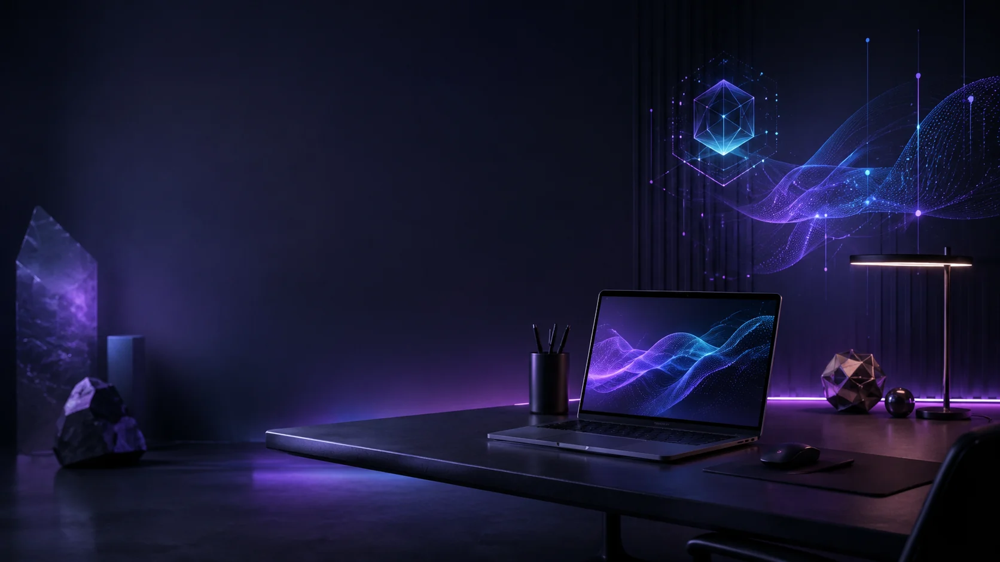

Rapid Concepts
Von grober Idee zu überzeugendem ersten Web-Prototyp.
Eine futuristische Agentur-Landingpage für AI-first Webdesign, Automatisierung und digitale Produktprototypen.

Diese Seite nutzt eine horizontale Card-Reihe, damit sie sich visuell klar von den anderen Landingpages unterscheidet.
Von grober Idee zu überzeugendem ersten Web-Prototyp.
Hero-Visuals, Mockups und Bildsprache für digitale Kampagnen.
Workflows und kleine Tools, die repetitive Aufgaben vereinfachen.
Wiederverwendbare Komponenten, Farben und UI-Regeln.
Wofür soll die Lösung wirklich genutzt werden? Erst danach wird gestaltet.
Eine erste nutzbare Version entsteht schnell, sauber und visuell greifbar.
Auf Basis echter Rückmeldungen wird die Oberfläche fokussierter.
Frontend-Demo mit dunklem Formular-Stil und Agentur-Positionierung.